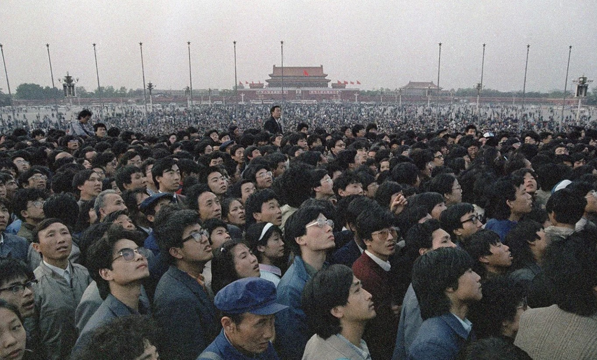

Escape from China (Book Review)
April 24, 2025

What is the cost of peace? In the past forty years, China has enjoyed an unprecedented surge in prosperity, emerging from the ruins of the Cultural Revolution (1966–76) and establishing herself as an economic and geopolitical superpower on the world stage. In mere decades, rural towns have been transformed into burgeoning megacities that rival the likes of New York and Tokyo. But, of course, behind this economic “miracle” is a regime of silence, control, suppression, and, at one point, bloodshed.
Zhang Boli’s book
Escape from China is a memoir about his participation in the infamous Tiananmen Square protests, followed by his harrowing two-year-long escape from the clutches of the Chinese government. In this gripping tale of cat-and-mouse, we are exposed to the gritty resilience of the human spirit as well as the strife of love and loss. And finally, as we might expect, we witness some of the deep spiritual longings that emerge from the soul of a wanted man without a home, searching for “a better country” (Heb. 11:16).
A week after the bloody dawn hours of June 4, 1989, the Chinese government releases the names of the twenty-one most wanted student leaders to the entire nation, with orders to turn them in to the police immediately. Their names and pictures are broadcast on every television and plastered on the walls of every railway station and airport. Zhang Boli is one of them. It is a nationwide manhunt, and there is nowhere to hide.
Forced to leave his wife and daughter, Zhang seeks shelter from friends and distant relatives. Exiling himself deep into the wild countryside of northeast China, the ex-student who once earned a living as a journalist transforms into a peasant, enduring the fierce winters in complete solitude and supporting himself by farming rice. Over the next two years, he has close-calls with the police and even an encounter with the Russian KGB. He experiences the angst of loneliness, the pain of abandonment, and the incessant fear of capture and death.
Overall, the book is thrilling and difficult to put down. Every time we think that Zhang will finally catch a break, we are let down and forced to commiserate with him in his failure. But, at certain points, we are also left in awe of Zhang’s guile and his uncanny ability to extricate himself from danger. The most moving parts of the story are those in which Zhang is most contemplative, reflecting upon the bleakness of his future, the futility of his existence, and all that could have been.
Finally, although faith does not feature prominently in the narrative, Zhang also recounts the events surrounding his conversion to Christianity as he was on the run from the police. One snowy night in the far north of China, he is sheltered by a distant relative—an old Christian lady who cannot read. Illiterate and without even a Bible, all she has is a small, handwritten copy of the Gospel of John, which she asks Zhang to read aloud to her. Over the course of the story, Zhang contemplates faith more deeply and becomes a Christian in the most unimaginable circumstances. Later in life, as revealed in the epilogue, he would go to seminary and become a pastor in America.
Wang Dan captures the essence of the book well in his foreword:
In 1989, the “Tiananmen Generation” endured an enormous spiritual impact. We came from idealistic dreams to face the darkest suppression. For most of us in our early twenties, who had grown up in a happy, peaceful time with everything provided for us, this change was etched forever into our bones. Many words have been written about the politics of the 1989 Democracy Movement, but very few have touched this aspect of the experience. Perhaps this part of the history must be written by us, the students. . . . Our reflections on the past are not merely nostalgic. Our sentiments are not passive. We just do not want to forget. This is our responsibility to ourselves and to history. Like Boli says: “I dare not forget, because I am forever part of this suffering nation.”
Purchase on Amazon
Zhang, Boli.
Escape from China: The Long Journey from Tiananmen to Freedom. Translated by Kwee Kian Low. New York: Washington Square Press, 2002.